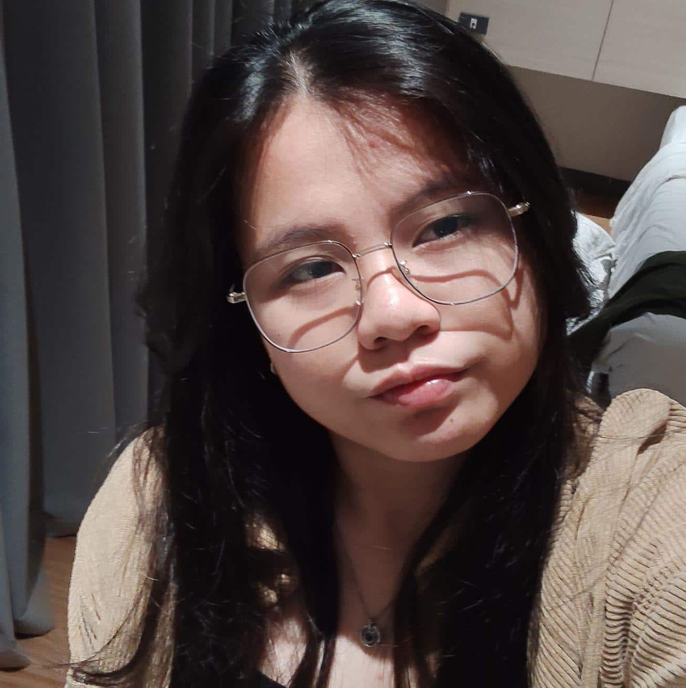

Reyshey Keena Pua | WDD 130
My name is Reyshey and I am from Cebu, Philippines. I love drawinga and playing online games with my friends and just watching tv series. I also love cooking for myself most of the time, but sometimes for my family if I'm not lazy. I love eating spicy food or something savory, just not a big fan of sweet food.